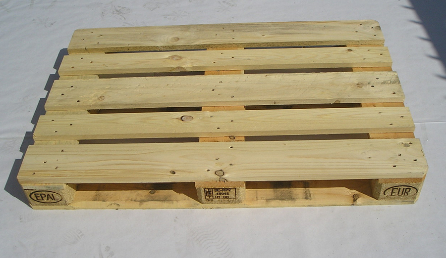
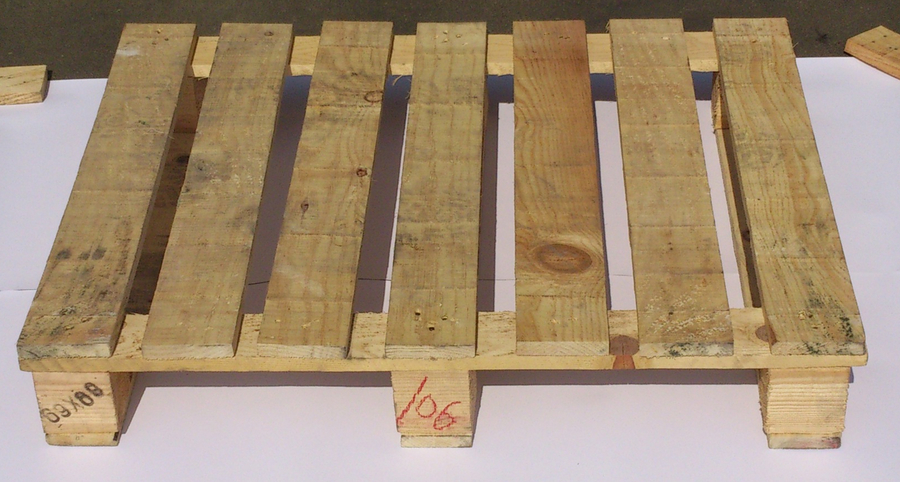
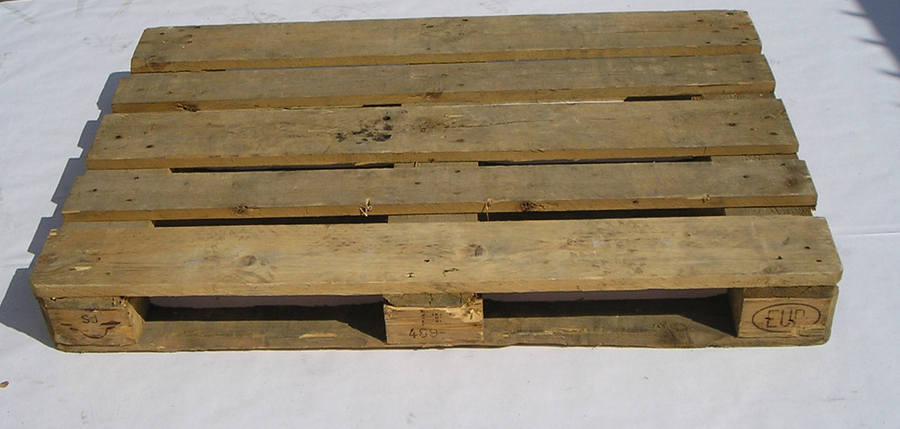
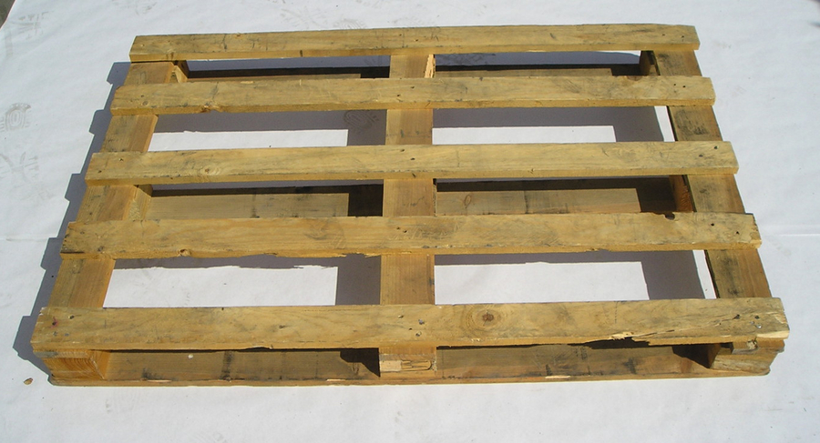
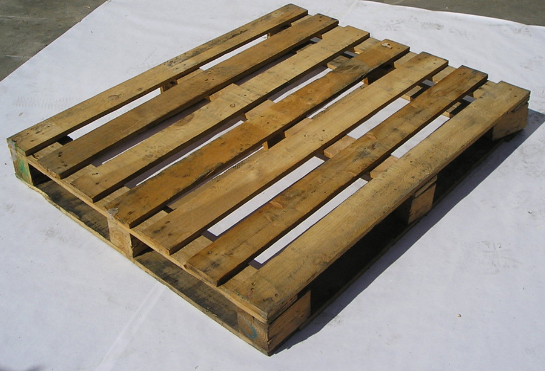
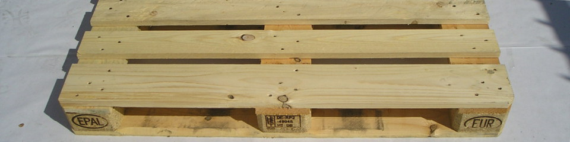

Palets nuevos
Venta de palets nuevos de madera (por ejemplo, la medida especial de 210 × 120 cm) y de plástico 80 × 120.
Pendiente de confirmar: si la empresa fabrica los palets nuevos o los distribuye desde proveedores.
Compra · Venta · Reciclaje · Distribución
Más de 35 años dando una segunda vida a la madera y llevando palets de calidad allí donde se necesitan.
Compramos, vendemos y reciclamos palets de madera y de plástico, para transporte y para decoración. Almacenes cerrados en Toledo y Madrid y transporte propio para entregar casi en toda España.
Nuestra historia
Palets Jiménez se dedica a la compra-venta de todo tipo de palets desde hace más de 35 años.
Con nuestro servicio de reciclaje colaboramos día a día en la mejora del medio ambiente, ofreciendo a nuestros clientes una gran variedad de productos y servicios relacionados con los palets: desde el palet europeo homologado hasta medidas especiales, palets de plástico y piezas para decoración.
Estudiamos cada caso para ofrecer la mejor valoración por los palets que usted ya no necesita, y los conservamos en almacenes cerrados para que lleguen siempre en buen estado.

Comienza la actividad de compra-venta de palets.
Pendiente: año de fundación e historia de los inicios.
Almacenes en el polígono industrial de Villaverde Alto (Madrid) y en Numancia de la Sagra (Toledo), para que los palets no se deterioren.
Flota con varios camiones y red de colaboradores para entregar casi en toda España.
Ampliación de la oferta a palets de plástico y a palets para decoración y mobiliario.
Compra, venta, reciclaje y distribución de palets de madera y plástico.
Más de tres décadas en el sector del palet.
Clasificación por gamas y conservación a cubierto.
Reciclaje y reutilización para alargar la vida de la madera.
Transporte propio y atención caso por caso.
Producción, recuperación y conservación
Trabajamos con dos circuitos distintos. Así es como cada palet llega preparado para volver a trabajar.
Venta de palets nuevos de madera (por ejemplo, la medida especial de 210 × 120 cm) y de plástico 80 × 120.
Pendiente de confirmar: si la empresa fabrica los palets nuevos o los distribuye desde proveedores.
Compramos los palets que ya no necesita. Cada caso se valora según la calidad, el tipo, las medidas, el estado, la cantidad y la distancia al punto de recogida.
Información publicada por la empresa.

Los palets se clasifican por medida, gama (flojo, fuerte, fuerte de 1ª, europeo homologado) y estado: nuevo, seminuevo, reciclado o usado.
Basado en el catálogo publicado.

Gracias al servicio de reciclaje, los palets usados vuelven al circuito y se ofrecen como reciclados o seminuevos.
Pendiente de confirmar: tareas concretas de reparación (sustitución de tablas o tacos, etc.).

Cada referencia indica su estado y una capacidad de carga orientativa, para que elija el palet adecuado para su mercancía.
Pendiente de confirmar: criterios y controles de calidad aplicados.

Disponemos de dos almacenes cerrados para que los palets no se deterioren y estén siempre en buen estado: Villaverde Alto (Madrid) y Numancia de la Sagra (Toledo).
Información publicada por la empresa.

Transporte propio con varios camiones y colaboradores para entregar casi en toda España. Según la distancia y la cantidad, el transporte se cobra o no.
Información publicada por la empresa.
Tipos de palets y aplicaciones
Decoración con palets
Ideas de decoración y mobiliario realizadas por nuestros clientes con palets. Puede hacerlas usted mismo con nuestros palets o encargárnoslas.
Las fotografías muestran trabajos de clientes como inspiración; no son productos de catálogo. Consúltenos qué palets y piezas tenemos disponibles para su proyecto.
Ubicaciones y servicio a domicilio
Palets Jiménez cuenta con transporte propio, con varios camiones, y con colaboradores para entregar casi en toda España.
La disponibilidad y el coste del transporte dependen de estos factores: según el caso, el transporte se cobra o no. Le informamos al hacer su consulta.
Le asesoramos y le preparamos una oferta según cantidad, tipo y destino.